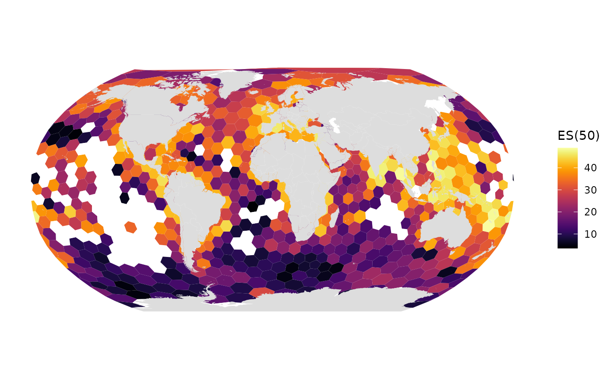
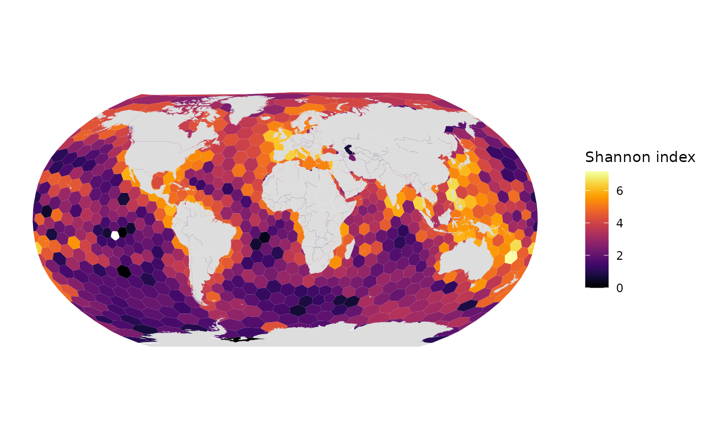
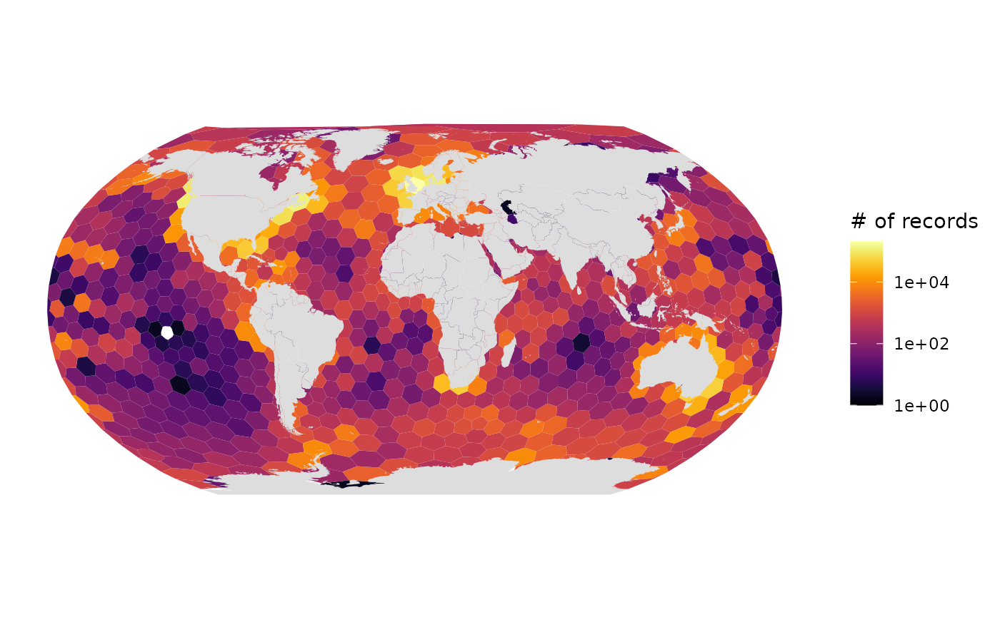
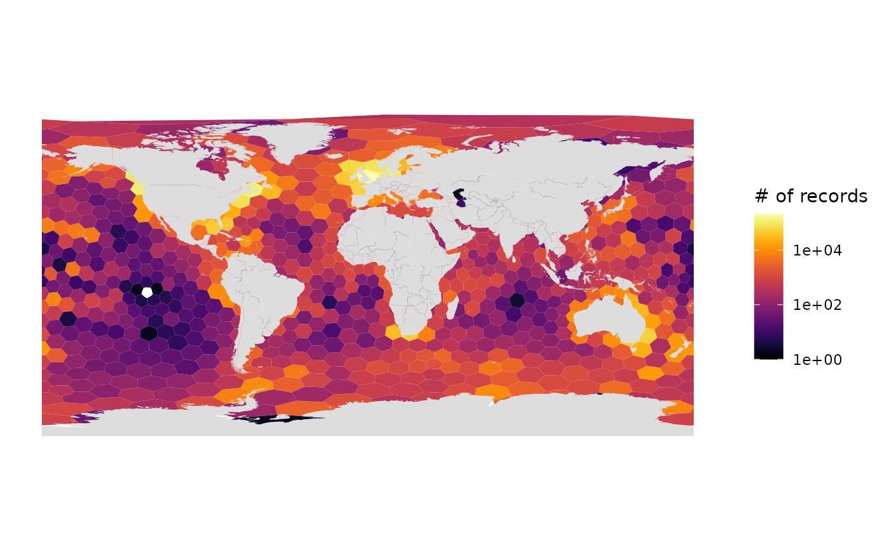

Get biological occurrences
Use the 1 million records subsampled from the full OBIS dataset otherwise available at https://obis.org/data/access.
occ <- occ_1M # occ_1M OR occ_SAtlanticCreate a global h3 hexagonal grid
hex_res <- 1 # hex_res 0 is too big to work, all others work
hex <- obisindicators::make_hex_res(hex_res)
# mapview::mapview(hex) # you can view the hex grid with h3 IDs
# === Then assign cell numbers to the occurrence data:
occ <- occ %>%
mutate(
cell = h3::geo_to_h3(
data.frame(decimalLatitude, decimalLongitude),
res = hex_res))Calculate indicators
The following function calculates the number of records, species richness, Simpson index, Shannon index, Hurlbert index (n = 50), and Hill numbers for each cell.
Perform the calculation on species level data:
idx <- calc_indicators(occ)Add cell geometries to the indicators table (idx):
grid <- hex %>%
inner_join(
idx,
by = c("hexid" = "cell"))
# you could now visualize with:
# plot(grid["es"])
# mapview::mapview(grid["es"])Plot maps of indicators
Let’s look at the resulting indicators in map form.
# ES(50)
gmap_indicator(grid, "es", label = "ES(50)")
# Shannon index
gmap_indicator(grid, "shannon", label = "Shannon index")
# Number of records, log10 scale, Robinson projection (default)
gmap_indicator(grid, "n", label = "# of records", trans = "log10")
# Number of records, log10 scale, Geographic projection
gmap_indicator(grid, "n", label = "# of records", trans = "log10", crs=4326)